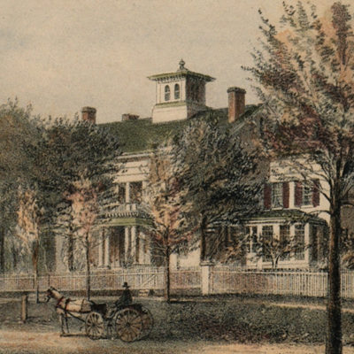
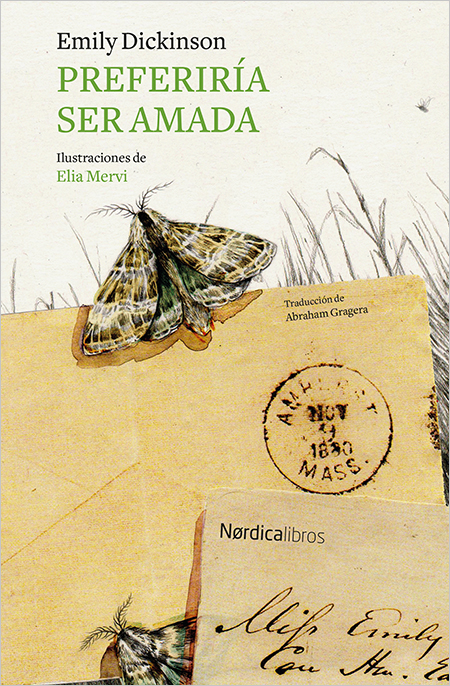
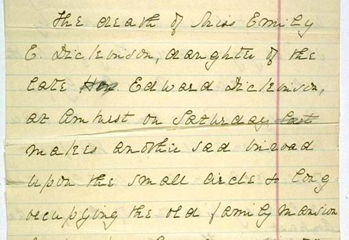

Dickinson procedía de una familia de prestigio y poseía fuertes lazos con su comunidad, aunque vivió gran parte de su vida recluida en su casa. Sus vecinos la consideraban excéntrica; tenía predilección por vestir siempre ropa blanca, era conocida por negarse a saludar a los invitados y en los últimos años de su vida, por ni siquiera querer salir de su habitación. Dickinson nunca se casó y la mayoría de amistades que tenía dependían completamente de la correspondencia.

El agua se aprende por la sed. La Tierra —por los Océanos atravesados. El Éxtasis —por la agonía— La Paz —la cuentan las batallas— El Amor, por el Hueco de la Memoria. Los Pájaros, por la Nieve.
Si el Valor te abandona— Vive por encima de Él— A veces se apoya en la Tumba, Si teme desviarse— Es una postura segura— Nunca se equivocó En esos brazos de Bronce— Ni el Mejor de los Gigantes— Si tu Alma tiembla— Abre la puerta de la Carne— La Cobarde necesita Oxígeno— Nada más—
Su pecho es propicio para perlas,
Pero yo no soy un Buceador—
Su frente es propicia para tronos
Pero yo no tengo penacho.
Su corazón es propicio para un hogar—
Yo—un Gorrión—construyo ahí—
Con la dulzura de las ramas
Mi perenne nido.
No es que el morir nos duela tanto –
Es el vivir – lo que nos duele más –
Pero el Morir – es un camino distinto –
Una variedad detrás de la Puerta –
La Costumbre Sureña – del Pájaro –
Que antes de que lleguen las heladas –
Acepta una Latitud mejor –
Nosotras – somos los Pájaros – que se quedan.
Las Ateridas en torno a las puertas del Campesino –
Por cuya miga reacia –
Pactamos – hasta que las Nieves compasivas
Persuadan a nuestras plumas a Casa

